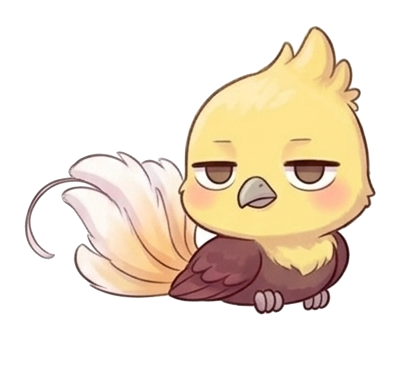

Family · 가족일상
이모 할머니 할아버지를 뵈었다 👴👵
📅 2026년 4월 23일
이모 할머니 할아버지를 뵈었어.
처음엔 내가 먹을 수 있는 게 없어서 별로 기분이 안 좋았어.
얘기도 지루했고... 😑

😑 노잼이었지
대신 10만원을 받아서 기분이 좋아졌지만 ㅎㅎ 💰
그래서 할머니한테 "감사합니다" 그랬어.
🍛 코다리집이어서 다솜이는 돈까스 먹었는데 그닥 맘에 들지 않았어.
할머니 할아버진 엄청 활발한 거 같았어.
성격도 좋아 보였어 😊
그리고 밥 먹고 차도 마셨어.
역시 맛은 없었어. 😶
10만원 받은 걸로 장난감 샀어.
스퀴시야! 과자도 먹었어.
그래서 기분 좋았어. 히히 😄

✨ 기분 최고!
10만원은 큰돈이야 💰✨